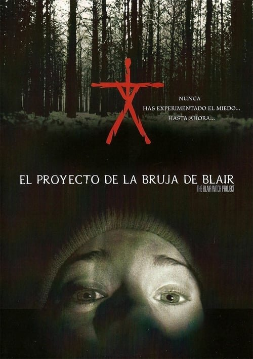

El proyecto de la bruja de Blair (1999)
Sinopsis Rápida
¿Qué pasaría si te dijeran que la película que estás a punto de ver es real? Tres estudiantes desaparecen en un bosque mientras investigan una leyenda local, dejando tras de sí una cámara con una aterradora verdad.
Sinopsis Detallada
El Proyecto de la Bruja de Blair sigue a un grupo de estudiantes de cine que se adentran en el bosque de Black Hills para investigar la leyenda de una bruja. Utilizando la técnica de metraje encontrado, la película crea una atmósfera de creciente tensión y paranoia, documentando su viaje y el terror que los acecha. La película juega con la línea entre la realidad y la ficción, dejando al espectador cuestionándose la autenticidad de los hechos. Las imágenes granulosas y la actuación naturalista contribuyen a la sensación de realismo y a la experiencia visceral del terror.
¿Por qué tenés que verla?
{{PUNTOS_CLAVE}}Idea Extra
Análisis comparativo de 'El Proyecto de la Bruja de Blair' con sus secuelas y otras películas de 'found footage', explorando la evolución del subgénero y su impacto cultural.
{{CONTENIDO_RELACIONADO}}